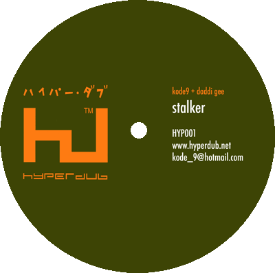

The first release on the Hyperdub label is a 10" vinyl limited release of kode9 + daddi gee's 'Sign of the Dub' / 'Stalker'. You can buy the record on the following websites: www.bigapplerecords.co.uk For press, sales and distribution enquiries please contact kode_9@hotmail.com Scroll right > > > to read some reviews which the record has received in the music press > > > > > > > > > > > > > > |
 |
Mixmag
|
Urb
[USA]
|
IDJ |
I-D
[March 2004] “Covers are generally shite. Or a cash in. But here dubstep garage pioneer Kode 9 returns covers to the underground’s cutting edge. “Stalker” is a rework of the much-hyped electro balladeers Junior Boys. But where there was once love, now there’s twisted percussive darkness. If, however, you think that’s dark, try Kode 9’s rework of Prince. It’s beatless, intense and paralyzing. Daddi Gee’s booming voice reaches out through the unsettled night. “The times, man… it’s the times.” |
Xlr8r
[USA] [April 2004] "Hyperdub/dubplate keeper Kode9 launches his Hyperdub imprint with two plates of minimalist UK grime arrangements wrapped around ultra-lethargic MC/spoken wordist Daddi Gee’s fathoms-deep voice. On the first slab, a throbbing bass tone, a semi-open hi-hat and the occasional eternally achoing dub chord are all that jab at Daddi’s recitation of Prince’s ‘Sign of the Times’, while half-time garridge fuels the spooky flipside, ‘Stalker’. ‘Spit’, the second record finds Gee havin’ at Public Enemy’s ‘Welcome to the Terrordrome’ in front of kode9’s chunky, haunted skarage. Order this one up at your shops." |
Jockey
Slut [March 2004] Hit of the Month [garage] “Dance music is rife with mediocrity. Producers move in packs, as scenes evolve stepwise and dubstep is in many ways no different. Here Kode 9 uses covers to challenge that norm. Where “Stalker” was once a Junior Boys love song, he turns it to obsession, amid sparse soca-step shards. “Sign Of The Dub,” however, is truly remarkable: a beatless dub cover of the Prince classic. No percussion means no momentum: you’re immobilized by its immense bass-pulse and delayed reggae stabs. Police sirens wail into the distance while Daddi Gee growls: “Some people say/a man never truly ‘appy/unless a nex’ man/truly dies … the times/it’s the times.” Innovation and zeitgeist in one.” |
The
Wire [March 2004] “Kode9 kicks off Hyperdub.com’s in-house label with. . .two of the darkest, most suffocating tracks ever to come out of the garage/reggae hybrid called dubstep. The entirely beatless ‘Sign of the Dub’ features Daddi Gee muttering nonsequiturs in a molasses baritone like LKJ in a K hole. His cousin lights up a spliff ‘for the very first time’ and in the next phrase is smoking rock; ‘I can’t understand when a rocket ship explode/yet everybody still want fi fly.’ For the five minute duration of the track, time effectively stops, a low bass pulse stilling your heartbeat into hibernating half-speed while pads flicker like the green flash of dusk. ‘Stalker’ is more familiar fare, laying down a swathe of spaceship hum over stop-start syncopations. But its techsteppy grimace is no less paranoid, and the periodic flare of backspinning vinyl sounds like a mind in meltdown.” |